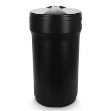

Qué usamos para el proceso de purificación del agua

Filtro de carbón activado
Usado para eliminar impurezas y olores.

Filtro Arena Silica
Filtra partículas grandes y sedimentos.

Filtro Suavizador
Elimina la dureza del agua.

Contenedor De Salmuera
Contiene salmuera para regenerar el suavizador.
Sistema de desinfección UV
Utiliza luz ultravioleta para matar bacterias.
Purificador de ósmosis inversa
Elimina contaminantes mediante membranas.